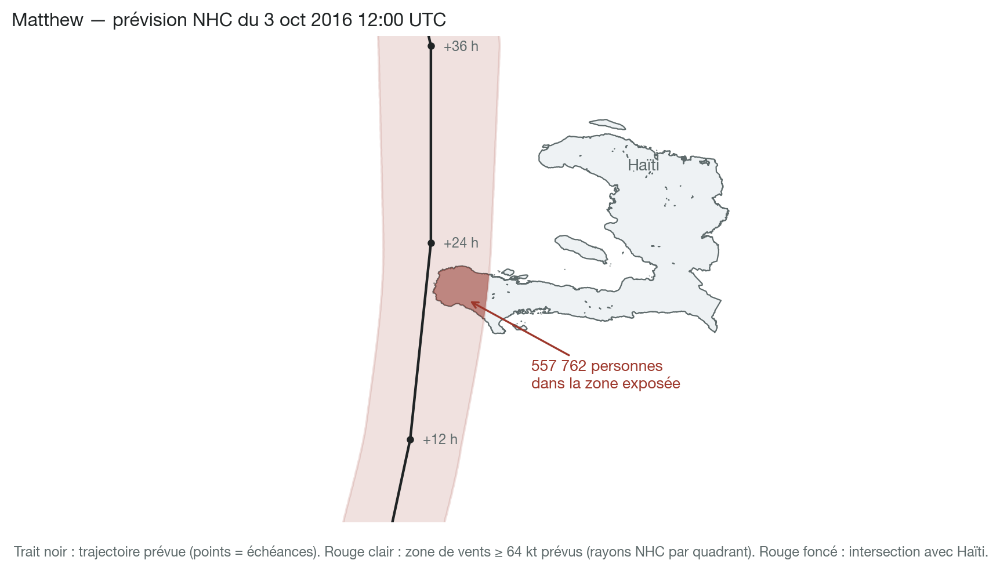
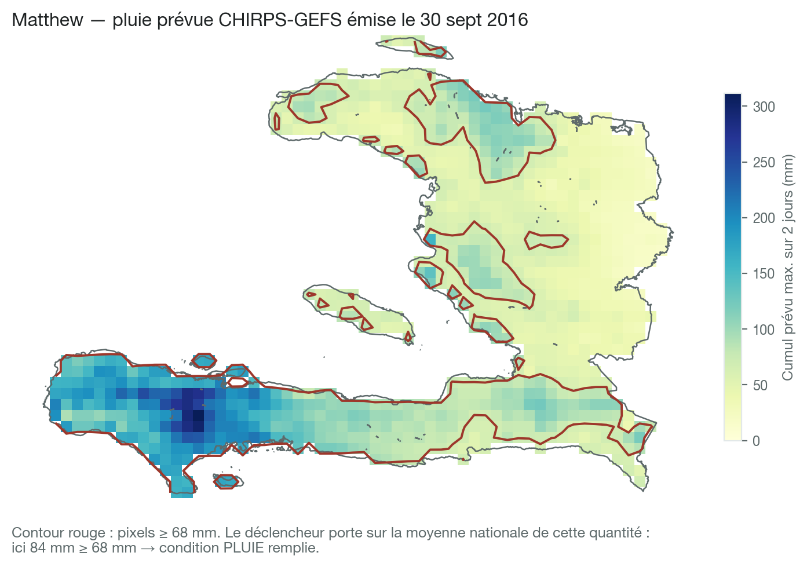

Trois déclencheurs — Mobilisation, Action, Réponse précoce — évalués automatiquement à chaque avis du National Hurricane Center (4×/jour).
| Déclencheur | Période de retour | Délai maximum des prévisions | Conditions de déclenchement | ||
|---|---|---|---|---|---|
| Prévisions : Mobilisation |
environ 3,0 ans | 120 heures | ≥ 68 mm de précipitations prévues | OU | > 0 personnes prévues d'être exposées aux vents de 64 nœuds |
| Prévisions : Action |
3,0 ans | 72 heures | ≥ 68 mm de précipitations prévues | OU | > 0 personnes prévues d'être exposées aux vents de 64 nœuds |
| OU | |||||
| La DGPC lance une alerte rouge | ET | L'alerte est confirmée par le NOAA NHC avec un « Hurricane Warning » | |||
| Observations : Réponse précoce |
3,4 ans | — | ≥ 57 mm de précipitations observées | OU | > 0 personnes observées d'être exposées aux vents de 64 nœuds |
| Période de retour globale | 2,4 ans | ||||
Heure limite : aucun déclencheur « prévisions » à moins de 48 h du passage prévu. Chaque stade s'active au plus une fois par tempête ; une activation est acquise pour toute la durée de la tempête.
> 0 personne prévue exposée aux vents ≥ 64 nœuds
≥ 68 mm de pluie prévue sur 2 jours (moyenne nationale)
Alerte rouge DGPC confirmée par un
« Hurricane Warning » du NHC
(stade Action uniquement)
Une seule voie suffit. Les trois voies sont détaillées dans les diapositives suivantes — puis le filet de sécurité sur observations.


Plan Cyclone SAPMAH — décision nationale de protection civile
Vents d'ouragan attendus sur la côte — confirmation météorologique indépendante
Exemple : pour Matthew (2016), le NHC a émis un Hurricane Warning pour la côte sud d'Haïti — cette voie aurait activé le stade Action. Un Hurricane Warning pour Haïti survient environ tous les 5 à 6 ans. Cette voie, proposée à partir du Plan Cyclone, reste à valider avec la DGPC ; elle ne concerne que le stade Action.
≥ 57 mm sur 2 jours, moyenne nationale (satellite IMERG / NASA)
> 0 personne dans la zone de vents ≥ 64 nœuds effectivement traversée
Évalué sur les observations réelles, sans délai de prévision : si une tempête frappe sans avoir été anticipée, le cadre s'active quand même. (Omis si le stade Action a déjà activé.)
À moins de 48 h du passage prévu — l'« heure limite » du cadre — il est trop tard pour agir avant l'impact : les déclencheurs « prévisions » ne peuvent plus s'activer, quelles que soient la pluie ou l'exposition prévues. Après le passage, seule la Réponse précoce (observations) reste possible.
| Système | Prévision | Observé | Déclenchement global |
CERF | Pop. affectée totale |
|||
|---|---|---|---|---|---|---|---|---|
| Exp. prév. | Précip. prév. | DGPC Rouge + Hur. Warning |
Exp. obs. | Précip. obs. | ||||
| Melissa (2025) | — | 82 mm | — | — | 80 mm | ✓ | $4,000,000 | 2,300,021 |
| Matthew (2016) | — | 139 mm | ✓ | 1,202,447 | 125 mm | ✓ | $10,100,000 | 2,100,439 |
| Jeanne (2004) | — | 30 mm | — | — | 25 mm | — | pre- | 315,594 |
| Sandy (2012) | — | — | — | — | 85 mm | ✓ | $4,000,000 | 201,850 |
| Ike (2008) | — | — | — | — | 36 mm | — | combined | 125,050 |
| Noel (2007) | — | — | — | — | 53 mm | — | — | 108,763 |
| Gustav (2008) | 931,571 | — | ✓ | 931,571 | 93 mm | ✓ | combined | 73,006 |
| Hanna (2008) | — | — | — | — | 57 mm | ✓ | combined | 48,000 |
| Laura (2020) | — | — | — | — | — | — | — | 44,175 |
| Irma (2017) | — | 34 mm | ✓ | — | 37 mm | ✓ | — | 40,092 |
| Dennis (2005) | — | 69 mm | — | — | 37 mm | ✓ | pre- | 15,036 |
| Ernesto (2006) | — | 44 mm | — | — | 63 mm | ✓ | — | 15,000 |
| Isaac (2012) | — | 104 mm | — | — | 133 mm | ✓ | — | 8,007 |
| Ivan (2004) | — | 54 mm | — | — | — | — | pre- | 6,500 |
| Tomas (2010) | 13,161 | 107 mm | ✓ | — | 87 mm | ✓ | — | 5,020 |
| Dean (2007) | — | 39 mm | — | — | 21 mm | — | — | 3,966 |
| Olga (2007) | — | — | — | — | 35 mm | — | — | 2,352 |
| Erika (2015) | — | 19 mm | — | — | 20 mm | — | — | 1,969 |
| Irene (2011) | — | 68 mm | — | — | 53 mm | — | — | 1,544 |
| Fay (2008) | — | — | — | — | 45 mm | — | combined | 220 |
| Elsa (2021) | — | 27 mm | ✓ | — | 41 mm | ✓ | — | 3 |
| Unnamed (2002) | — | 48 mm | — | — | 64 mm | ✓ | pre- | — |
Rejeu du mécanisme sur 2002–2025 (tempêtes ayant déclenché, causé des impacts ou reçu une allocation CERF). Cellules orange : condition atteinte (prévisions évaluées avant le seuil des 48 h). CERF : « pre- » = antérieur à la création du CERF (2006) ; « combined » = allocation combinée Fay/Gustav/Hanna/Ike (2008). Pop. affectée : EM-DAT ; Melissa : chiffres préliminaires.
Chiffres et figures calculés avec le code du système de suivi : github.com/OCHA-DAP/ds-aa-hti-hurricanes